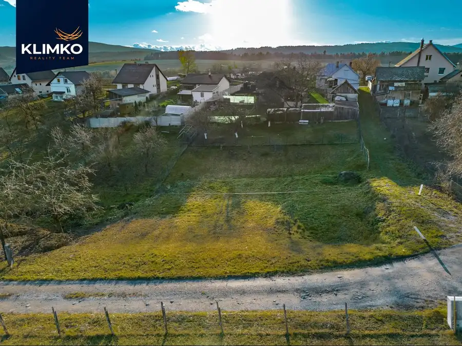
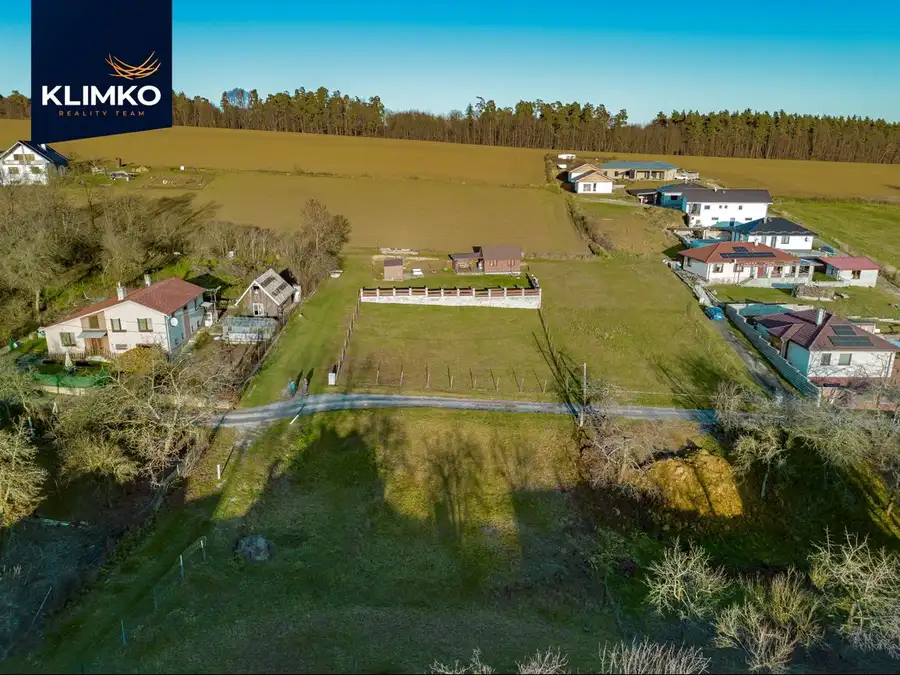
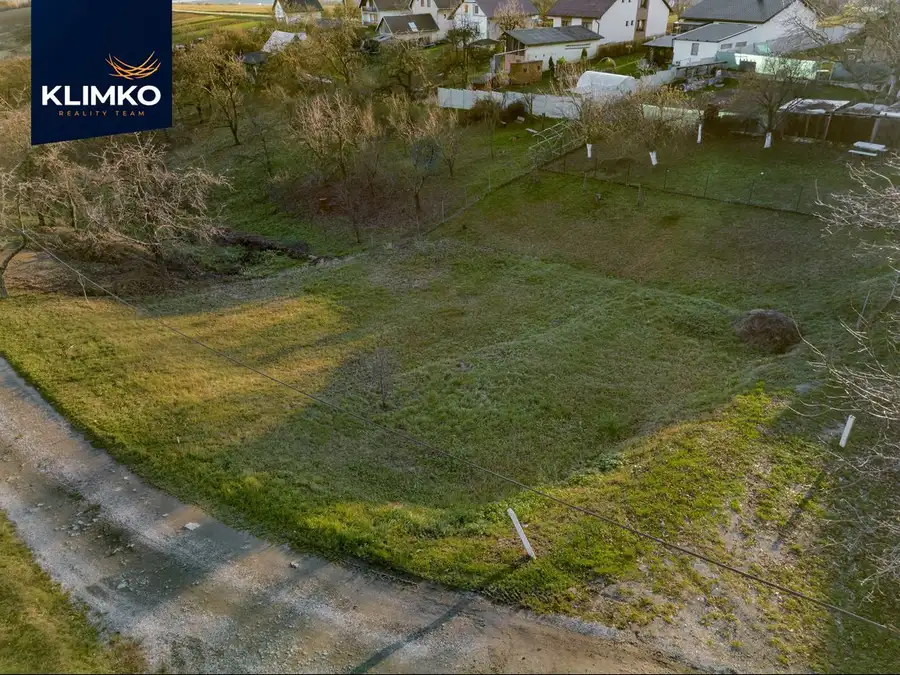
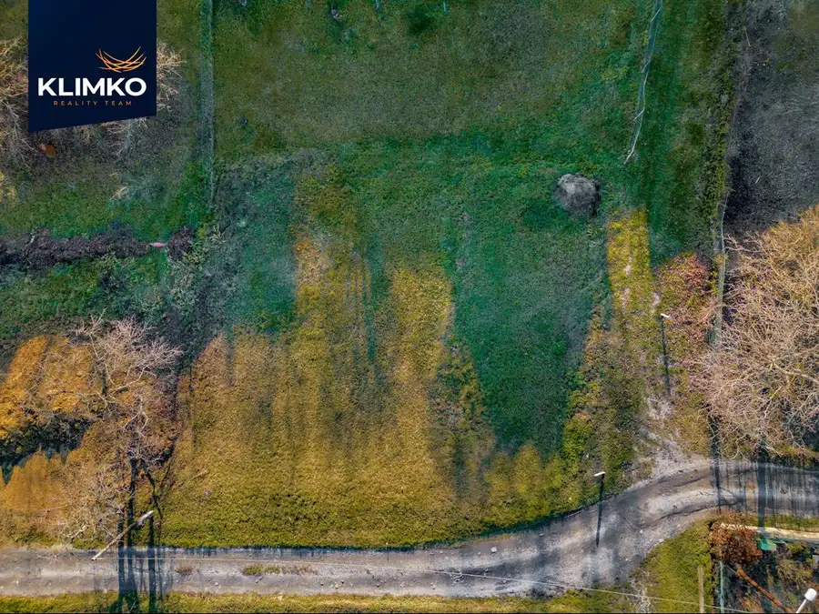
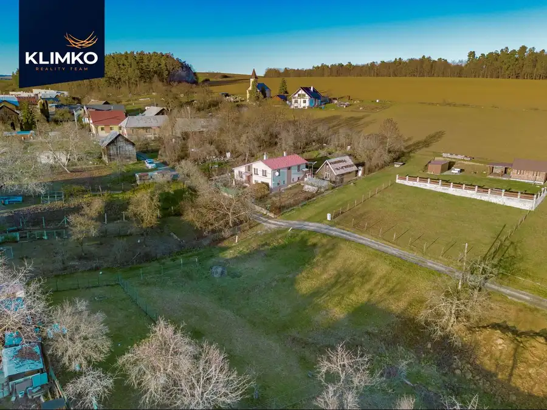

Slnečný pozemok v obci Bunde na predaj
Chminianska Nová Ves





- Plocha575 m²
O nehnuteľnosti
Ponúkame na predaj pekný stavebný pozemok o výmere 575 m², nachádzajúci sa v tichej a príjemnej časti obce Bunde. Pozemok je slnečný počas celého dňa a má mierne svahovitý terén, ktorý poskytuje krásny výhľad aj zaujímavé možnosti pri budúcej výstavbe.Výhody pozemku:- ideálna výmera pre rodinný dom- pokojná vidiecka lokalita- slnečná orientácia- mierny svah vhodný na terasové riešenie- voda, elektrina, plyn v dosahu pri pozemku- dostupnosť občianskej vybavenosti v dosahu cca 3km v Chminianskej Novej VsiPozemok je vhodný pre tých, ktorí hľadajú pokojné bývanie v obci s dobrým spojením a príjemnou atmosférou.V prípade záujmu ma neváhajte kontaktovať.CENA: 37.000,-€DOHODNITE SI OBHLIADKU:Simona Rusnáková0915 312 875simona@klimkoreality.skKLIMKO reality team
Parametre
- Druh
- Pozemok pre rodinné domy
- Dátum zverejnenia
- 27. 11. 2025
- Elektrina
- Pri pozemku - 230 V
- Odpadové vody
- Pri pozemku - Žumpa, Pri pozemku - Čistička odpadových vôd
- Plocha pozemku
- 575 m²
- Plyn
- Pri pozemku
- Pripravenosť k výstavbe
- Predbežný súhlas
- Prístupová komunikácia
- Kamenitá, Štrková
- Terén pozemku
- Mierne svahovitý
- Typ
- Predaj
- Voda
- Pri pozemku - Verejný vodovod